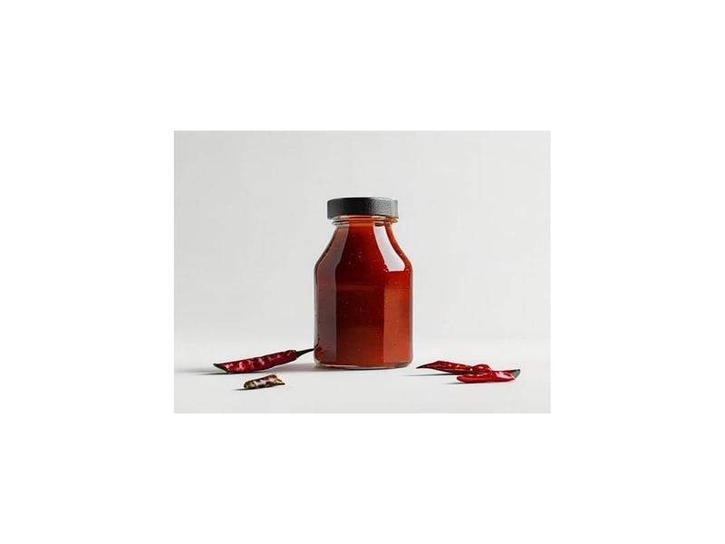

Sosy
Sos ostry (chilli)
Sos ostry (chilli): 2 g białka, 80 kcal, 15 g węglowodanów i 1 g tłuszczu na 100 g. Kategoria: Sosy.
Kalorie80 kcalna 100 g
Białko / proteiny2 g
Węglowodany15 g
Tłuszcz1 g
Cena (szac.)~5,80 złza 100 g
Ceny zaktualizowano: maj 2026 (szacunek — ceny w popularnych supermarketach)
Porcja: łyżeczka (5g)
| Kalorie | 4 kcal |
|---|---|
| Białko | 0.1 g |
| Węglowodany | 0.8 g |
| Tłuszcz | 0.1 g |
| Cena (szac.) | ~0,29 zł |
Szczegółowe składniki odżywcze na 100 g
| Wartość energetyczna (kalorie) | 80 kcal |
|---|---|
| Białko (proteiny) | 2 g |
| Węglowodany | 15 g |
| Tłuszcz | 1 g |
| Tłuszcze nasycone | 0.2 g |
| Tłuszcze nienasycone | 0.8 g |
| Witaminy i minerały | Kapsaicyna, Sód, Potas |
| Współczynnik kcal / 1 g białka | 40.0 |
| Cena produktu (szac. za 100 g) | ~5,80 zł |
| Cena za 100 g białka (szac.) | ~290,00 zł |